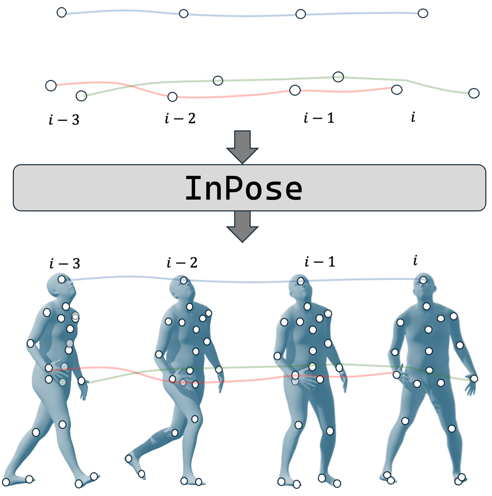
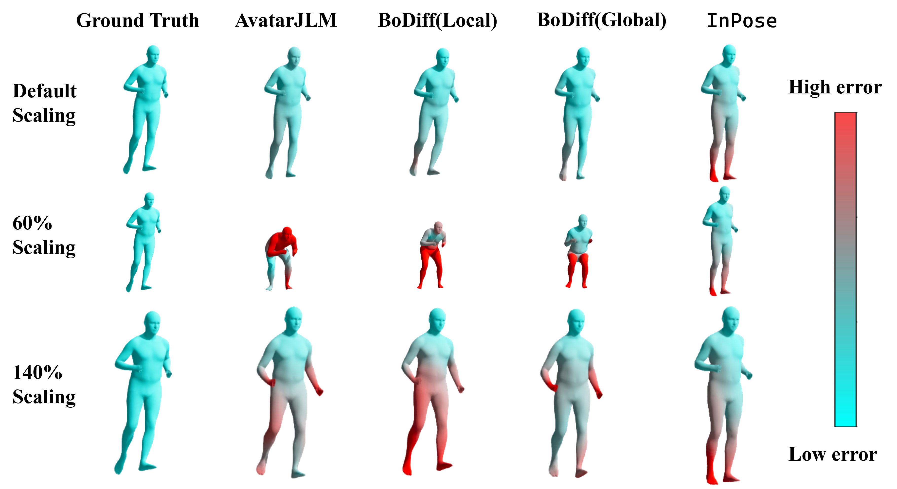
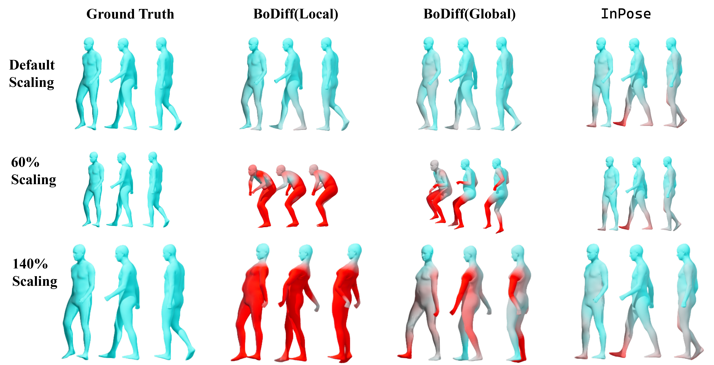
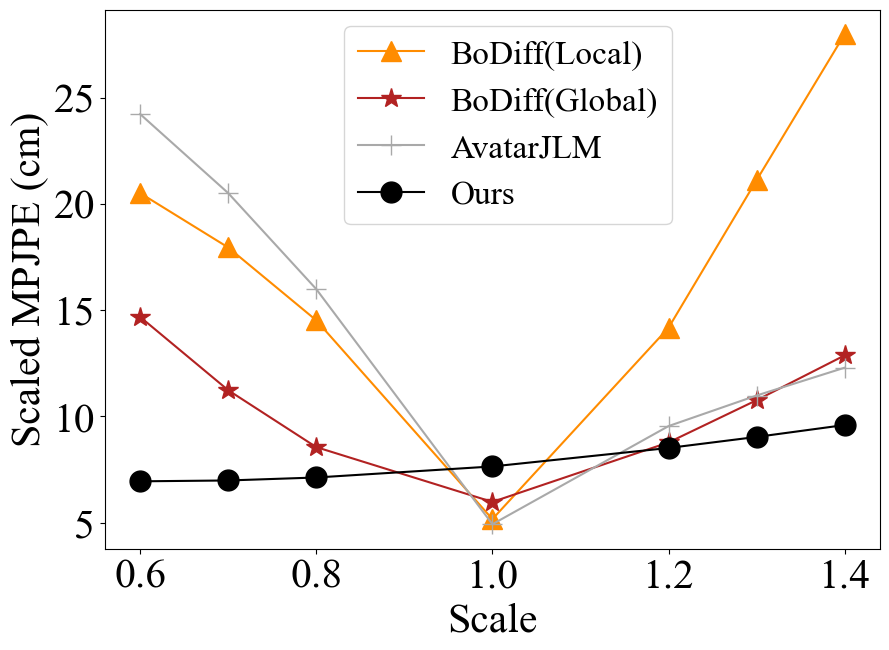
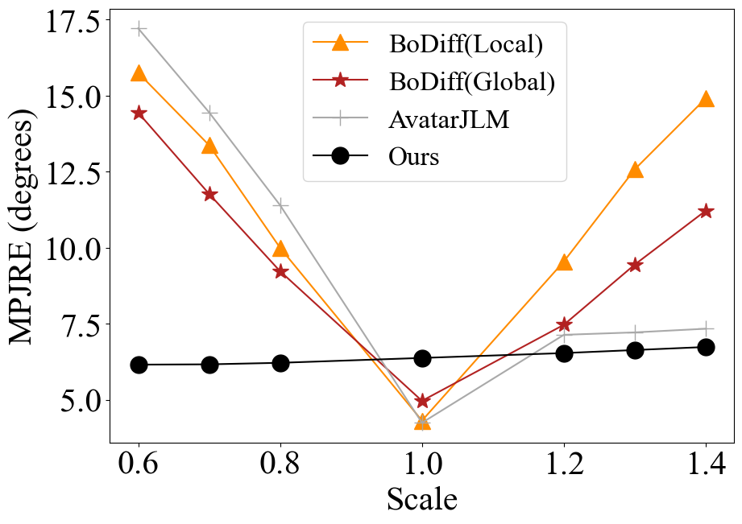

Pose estimation refers to tracking a human's full body posture, including their head, torso, arms, and legs. The problem is challenging in practical settings where the number of body sensors are limited. Past work has shown promising results using conditional diffusion models, where the pose prediction is conditioned on both <location, rotation> measurements from the sensors. Unfortunately, nearly all these approaches generalize poorly across users, primarly because location measurements are highly influenced by the body size of the user. In this paper, we formulate pose estimation as an inverse problem and design an algorithm capable of zero-shot generalization. Our idea utilizes a pre-trained diffusion model and conditions it on rotational measurements alone; the priors from this model are then guided by a likelihood term, derived from the measured locations. Thus, given any user, our proposed InPose method generatively estimates the highly likely sequence of poses that best explains the sparse on-body measurements.

Each of the above samples shows pose tracking results for a few second segments. Errors are shown using colors (more red indicates higher error). InPose figures out lower body movement using the prior learnt by the model.
Note the catastrophic failure in Sample #4, where the algorithm can't identify that the user is lying on the ground. This is alleviated in the samples below by modifying the algorithm.
We address catastrophic failures by giving head position to CFG guidance. The modified algorithm improves the lower body pose estimates over the previous results (compare Sample #1 here with Sample #4 above).
Outlier body shapes can also be handled by the inverse guidance. This robustness allows the utilization of training data from any subject.


The above Figures present qualitative comparisons between InPose and some Baselines, for two scaling factors, 0.6 and 1.4. Unlike the baselines, InPose is able to generalize to varied body scales due to the inverse formulation underlying our proposed algorithm. The baselines perform better for the default size, especially in the lower body, but degrade at the task of generalization. The errors are especially prominent in the 0.6 case, where the baselines predicts the lower body to be in a squatted pose because the measurements are generated by a user of short stature. Since the priors were learnt by BoDiffusion on data generated by a user of the default body shape, there is no way of informing the model of this difference. For the 1.4 case too, the baselines incur higher torso error.

(a) Position error vs. body scale.

(b) Rotation error vs. body scale.
(c) Position error vs. location noise.